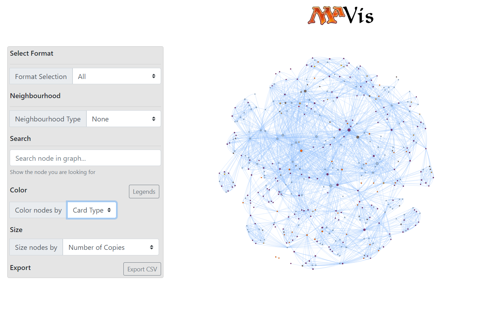

This is an app I originally wrote to visualize and explore supply chains in various sectors of a market, and have since adapted for my personal use to visualize trends in various formats of strategy games. In particular, the Metagame Analysis Visualizer, affectionately dubbed MAVis for short, displays data relating to some of the most popular formats in Magic: the Gathering. Nodes in the graph represent cards being played and edges between cards denote that they have been played together in the same deck.
All data displayed in MAVis has been scraped from tournament results which are publicly available on MTG Goldfish, however this data structure is very ubiquitous can be adapted quickly to almost any line of business which supply-chain-like data. If you want to see MAVis for yourself, click below to view it, or see the code used to produce it. Please note that to keep costs down, MAVis turns off after 30 minutes of inactivity so please allow about 30 to 60 seconds for the app to start when you open it.

MAVis is coded in Python and runs on the Dash framework. It is deployed on an Azure App Service using the Free tier plan to lower costs. If you'd like to see how to deploy your own Dash app to an Azure App Service, you can follow the steps outlined in my article on the subject.
When you launch MAVis, a network will open and begin arranging itself via a physics engine which has been tuned specifically for MAVis. Scrolling on the network will allow you to zoom in and out, while clicking and dragging on the network will allow you to move through it. Hovering over a node will highlight all the edges touching that node, and clicking on it will make those edges remain highlighted until you click elsewhere.
Looking over to the settings pane on the left, there is a number of options. First up is the Format Selection dropdown. Choosing an option here will hide all cards and edges which do not belong to the chosen format. If you want to see all cards and edges, simply choose the "All" option.
Next is the neighbourhood type selection. Choosing an option here will allow you to select a node in the graph and show only those edges and nodes which are related to your selection in a particular way. For example, if I choose "Direct Neighbours" as my neighbourhood type and click on "Lightning Bolt" in my network, only Lightning Bolt and those cards who are directly linked to it are displayed in the graph.
If you're struggling to find Lighting Bolt yourself, in the network, the search bar can help. Start typing in the name of the node you'd like to find, and all nodes that don't match will fade into the background, leaving only your search target.
When viewing data at this scale, it can be helpful to be able to identify broad categories at a glance. Choosing an option in the "Color nodes by" dropdown will group the nodes into classes based on your selection, and color each class a different color. Clicking the "Legends" button to the right of it will reveal a popup pane with a color legend for your reference.
Similarly, it can be helpful at this scale to use the size of a node to represent various properties of it. Choosing an option from the "Size nodes by" dropdown will resize the nodes to represent the value you've chosen. For example if I select the "Number of Copies" option, cards which have shown up in the top results of tournaments very frequently will be shown larger than those which show up less frequently.
Lastly, you may want to keep a copy of the data you're looking at for reference later. Clicking the "Export CSV" button at the bottom of the settings pane will download a CSV file containing information only about those nodes who are shown on screen, so that if you only want to know about cards that are played alongside Lightning Bolt in the Legacy format, that option is available.
The most obvious insight to be drawn from MAVis is card synergies. Since MAVis arranges the network automatically based on the edge configuration and the physics engine, the end result will be that cards which pair well together, and therefore show up in decks together frequently, will stick more closely together than cards that don't. Moreover, cards which are strong and generic enough to be more ubiquitous will tend to be pulled toward the middle of the network as they are played with many different cards. Therefore if we were looking to, say, curate a list of banned cards, we would want to keep an eye on cards that are pulled closer to the middle of the network.
This can be seen using our previous Lightning Bolt example. In the image below to the left, we can see that a card like Lava Spike synergizes well with Lightning Bolt, and as a result they are played together often. Lava Spike is traditionally a card which is only good in a very aggressive, burn style strategy. Thus it is also often paired with cards like Goblin Guide and Boros Charm, and we can see that these cards form a small cluster together. In stark contrast to this, however, Lightning Bolt is such a strong card that it is played in multiple strategies, and thus is pulled squarely into the middle of the network, as in the image below and to the left.
I encourage you to explore the data and think about what insights could be drawn from the data in this style. For example, swapping between older formats like Modern and newer formats like Standard, how much of the network is shared between the two? Is this indicative that the power level of newer card designs are too strong? Is this something that should be addressed?
What kinds of insights could be drawn by exploring the data your organization keeps about its own supply chain in this way? This might be something you could make use of yourself. In the meantime, thank you for reading and I hope you got something out of MAVis as well as my other projects.
{kind=link}
{kind=link}